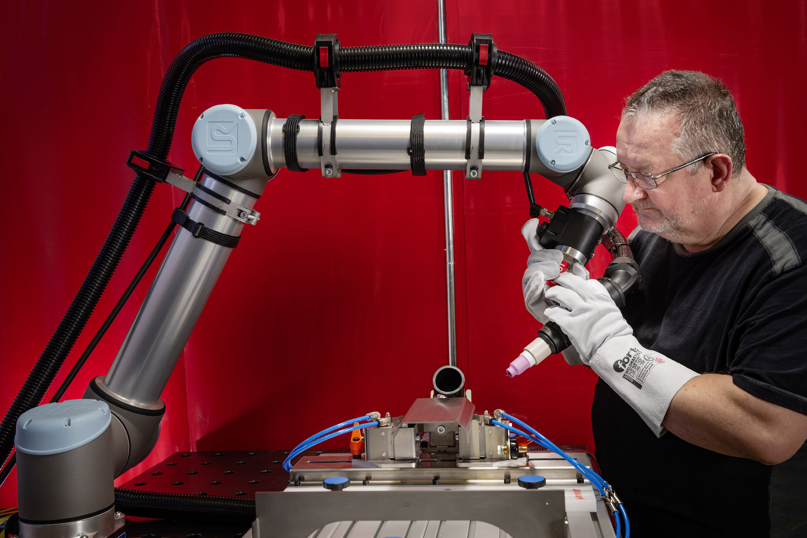

Commande en Force
Le contrôle en force en robotique est une méthode de commande qui consiste à réguler les forces et les couples exercés par un robot lorsqu’il entre en contact avec son environnement.
Cobots (Universal Robot) utilisé pour la soudure
Les robots qui utilisent ces commande nécéssite un hardware tout particulier (et un software aussi bien-sûr), de ce fait ils sont classés dans une case particulière en robotique. On parle de Cobots, pour Coopérative Robot.
Ce système de commande est essentiel dans les tâches impliquant une interaction physique,
comme la manipulation d’objets fragiles ou la chirurgie...
Dynamique Inverse
La dynamique inverse en robotique consiste à calculer les efforts (forces ou couples articulaires)
nécessaires pour produire un mouvement donné du robot. À partir des trajectoires souhaitées, définies par les
positions généralisées \( q(t) \), les vitesses \( \dot{q}(t) \) et les accélérations \( \ddot{q}(t) \), ainsi que du
modèle physique du robot.
On détermine les commandes \( \tau(t) \) à appliquer aux actionneurs.
Pour un manipulateur rigide, la dynamique est généralement exprimée par :
\[
M(q)\ddot{q} + C(q,\dot{q})\dot{q} + G(q) = \tau + J^T(q)f_{tip}
\]
Avec :
- \( M(q) \) : matrice d'inertie du robot.
- \( C(q,\dot{q}) \) : termes représentant les effets de Coriolis et centrifuges.
- \( G(q) \) : vecteur des efforts dus à la gravité.
- \( J(q) \) : matrice jacobienne reliant les vitesses articulaires à celles de l’effecteur.
- \( f_{tip} \) : forces externes appliquées au robot (contacts, interactions) appliqué à l'effecteur.
Algorithme
Pour résoudre l'équation on utilise un algorithme récursif du nom de Newton-Euler.
Elle repose sur les lois fondamentales de la mécanique de Newton pour les forces
et d’Euler pour les rotations, appliquées à chaque solide du robot considéré comme
un corps rigide.
Le calcul se déroule en deux étapes principales :
Elle permet de déterminer, de la base vers l’effecteur, les vitesses et accélérations de chaque articulation.
Elle permet quand à elle de calculer de l’effecteur vers la base, les forces et moments transmis entre les maillons
Newton-Euler:
Phase Forward :
Soit \( n \) le nombre d’articulations. Pour \( i = 1 \) à \( n \), on calcule :
\[ \omega_i = {}^{i-1}R_i^T \left( \gamma_{i-1} + U_i \dot{q}_i \right) \] \[ \alpha_i = {}^{i-1}R_i^T \left( \alpha_{i-1} + U_i \ddot{q}_i + \gamma_{i-1} \times (U_i \dot{q}_i) \right) \] \[ a_i = {}^{i-1}R_i^T a_{i-1} + \alpha_i \times r_i + \gamma_i \times (\gamma_i \times r_i) \] \[ a_{CI_i} = a_i + \alpha_i \times r_{CI_i} + \gamma_i \times (\gamma_i \times r_{CI_i}) \]
où :
- \( \omega \) est la vitesse angulaire,
- \( \alpha \) est l’accélération angulaire,
- \( a \) est l’accélération linéaire,
- \( a_{CI} \) est l’accélération linéaire du centre de masse,
- \( r_i \) est le vecteur reliant les bases \( i-1 \) et \( i \),
- \( r_{CI_i} \) est le vecteur reliant la base \( i \) au centre d’inertie,
- \( U_i \) est l’axe de rotation de l’articulation \( i \),
- \( {}^{i-1}R_i^T \) est la matrice de rotation de la base \( i \) vers la base \( i-1 \).
Avec \( \omega_0 \) et \( \alpha_0 \) = 0 et \( a_0 \) = - \(\vec{g} \)
Phase Backward :
Pour \( i = n \) à \( 1 \), on calcule :
Pour la phase retour (du dernier lien vers la base), on calcule pour chaque articulation :
\[ f_i = {}^{i-1}R_i^T f_{i+1} + m_i \, a_{CI_i} \] \[ \tau_i = {}^{i-1}R_i^T \tau_{i+1} + \left( {}^{i-1}R_i^T f_{i+1} \right) \times (-r_{CI_i}) - (m_i \, a_{CI_i}) \times r_{CI_i} + I_{n_i} \, \alpha_i + \omega_i \times \left( I_{n_i} \, \omega_i \right) \]
où :
- \( f_i \) : force transmise par le lien \( i \),
- \( \tau_i \) : couple exercé au niveau de l’articulation \( i \),
- \( m_i \) : masse du lien \( i \),
- \( I_{n_i} \) : matrice d’inertie du lien \( i \),
- \( a_{CI_i} \) : accélération du centre d’inertie du lien \( i \),
- \( \omega_i \) : vitesse angulaire du lien \( i \),
- \( r_{CI_i} \) : vecteur reliant l’articulation \( i \) au centre d’inertie,
- \( {}^{i-1}R_i^T \) : matrice de rotation de la base \( i \) vers la base \( i-1 \).
Avec \( f_n \) et \( \tau_n \) = 0 et \( {}^{n-1}R_n \) = \( I \) la matrice identité.
On peut simplement avec la forward et backward pass obtenir les commandes en couple, et donc en courant, requise pour commander des trajectoires.
Calcul des différentes matrices
Il peut être interessant de simuler comment un robot se deplace dans un espace donnée, sous une gravité particulière avec ou sans force exterieur :
Si on note l'algorithme précédent \( NE \) alors on déduire de l'équation plus haute que :
- \( NE \) avec \( \dot{q} \) et \( \ddot{q} \) = 0 donne \( G \),
- \( NE \) avec \( \ddot{q} \) et \( g \) = 0 donne \( C \),
- \( NE \) pour \( i = 1 \) à \( n \) avec \( \dot{q} \) et \( g \) = 0 et \( \ddot{q}_{i}\) = 1 donne \( M \),
(chaque \( \tau_M \) est une colonne de \( M \))
Ainsi une fois chaque matrice calculé, il ne reste qu'a résoudre :
\[ \ddot{q} = \frac{\tau + J^T(q)f_{tip} - C(\dot{q},q) - G(q)}{M^{-1}} \]
où :
- \( \tau \) = \( \tau_{ext} \) - \( \tau_{friction} \) ,
Ensuite, pour finir on intègre avec RK4 ou Euler-Symplectic pour obtenir finalement : \( \dot{q}_{\text{new}} \text{ et } q_{\text{new}}. \)
Je recommande fortement d'aller voir le
Cours du professeur Alessandro de Luca à l'Université de Rome pour mieux comprendre cet algorithme
et tout ce qui tourne autour.
Dans ces calculs on touche à quelque chose de complexe, ainsi il y a de nombreuses
convention etc... Il est donc assez important de tester soit même pour avoir quelque chose
qui fonctionne comme attendu !
Exemple en code
Voici les algorithmes qui permettent de visualiser sur un robot 2 axes quelconque sous les effets de
à la gravité de la friction.
Ces codes sont à utiliser ensemble et sont sur Matlab pour faciliter les calculs matriciels.
Gif Resultat 2 axes sans force exterieur
Visualisation dynamique inverse
close all;
%% Initialisation
iteration =800;
O0 = [0;0;0];
l = [1,1];
g = -9.81;
q0 = [pi/2;0]; % angles Initiaux
dq0 = [0;0]; % vitesse
dt = 0.01; % pas -> plus petit plus précis
ddq0 = [0;0]; % acceleration
% Data storage
q_plot = zeros(2, iteration);
dq_plot = zeros(2, iteration);
ddq_plot = zeros(2, iteration);
m = [1,1]; % Masse
% Setup figure for animation
figure(1); clf;
axis equal;
axis([-l(1)*2,2* l(1), -l(1)*2, l(1)*2, -l(1)*2, l(1)*2]);
view(15, 30);
xlabel('X-axis'); ylabel('Y-axis'); zlabel('Z-axis');
title('3D Motion of the Link');
grid on; hold on;
%% Simulation
for i = 1:iteration
[MM,ddq_new] = Forward_dynamique_matrice_2(q0, dq0, dt, g); % juste pour le plot
% RK4 Integration
[q_new, dq_new] = RK4_Integration(q0, dq0, dt, g);
% Sauvegarde pour Plot
q_plot(:,i) = q_new;
dq_plot(:,i) = dq_new;
ddq_plot(:,i) = ddq_new;
% Update les valeurs
q0 = q_new;
dq0 = dq_new;
ddq0 = ddq_new;
% Matrices de Transformation
T01 = [cos(q_new(1,:)), 0, sin(q_new(1,:)), 0;
0, 1, 0, 0;
-sin(q_new(1,:)), 0, cos(q_new(1,:)), 0;
0, 0, 0, 1];
T01(3,4) = l(1);
T12 = [cos(q_new(2,:)), 0, sin(q_new(2,:)), 0;
0, 1, 0, 0;
-sin(q_new(2,:)), 0, cos(q_new(2,:)), 0;
0, 0, 0, 1];
T12(3,4) = l(2);
% Draw the Robot
cla; % Clear les axes pour animations
Draw_Cord(q_new, l);
% Pause
pause(0.01);
end
%% Plot Results
time = (0:iteration-1) * dt;
% Tracé des angles q
figure(2);
plot(time, q_plot(1, :), 'r', 'DisplayName', 'q1');
hold on;
plot(time, q_plot(2, :), 'g', 'DisplayName', 'q2');
xlabel('Temps (s)');
ylabel('Angles (rad)');
title('Évolution des angles articulaires');
legend('show');
grid on;
% Tracé des vitesses dq
figure(3);
plot(time, dq_plot(1, :), 'r', 'DisplayName', 'dq1');
hold on;
plot(time, dq_plot(2, :), 'g', 'DisplayName', 'dq2');
xlabel('Temps (s)');
ylabel('Vitesses (rad/s)');
title('Évolution des vitesses articulaires');
legend('show');
grid on;
% Tracé des accélérations ddq
figure(4);
plot(time, ddq_plot(1, :), 'r', 'DisplayName', 'ddq1');
hold on;
plot(time, ddq_plot(2, :), 'g', 'DisplayName', 'ddq2');
xlabel('Temps (s)');
ylabel('Accélérations (rad/s²)');
title('Évolution des accélérations articulaires');
legend('show');
grid on;
Algorithme NE
function [Masse_M,ddq_new] = Forward_dynamique_matrice_2(q, dq, dt, g)
%% INITIALISATION
ddq_1 = zeros(2,1);
g1 = 0;
% Calcul les couples Initiaux quand ddq = 0 & g = 0 (effect de Coriolis & centripetal)
[accel_centre_masse_1, accel_an_1, v_an_1] = dynamique_inverse_forward_matrice_2(q, dq, ddq_1, g1);
tau_1 = dynamique_inverse_backward_matrice_2(accel_centre_masse_1, accel_an_1, v_an_1, q, g1);
% Calcul couples due à la gravité (ddq = 0,dq=0 ,g ≠ 0)
ddq_3 = zeros(2,1);
dq_3 = zeros(2,1);
[accel_centre_masse_3, accel_an_3, v_an_3] = dynamique_inverse_forward_matrice_2(q, dq_3, ddq_3, g);
tau_3 = dynamique_inverse_backward_matrice_2(accel_centre_masse_3, accel_an_3, v_an_3, q, g);
%% COMPUTE MASSE MATRIX M(q)
g2 = 0;
dq2 = zeros(2,1);
Masse_M = zeros(2,2);
for i = 1:2
ddq2 = zeros(2,1);
ddq2(i) = 1;
[accel_centre_masse_2, accel_an_2, v_an_2] = dynamique_inverse_forward_matrice_2(q, dq2, ddq2, g2);
tau_2 = dynamique_inverse_backward_matrice_2(accel_centre_masse_2, accel_an_2, v_an_2, q, g2);
Masse_M(:, i) = tau_2';
end
%friction visqueuse --> depend vitesse
coef_friction = 0; % valeur random (fct du medium)
c= [coef_friction*dq(1);coef_friction*dq(2)];
%-------------------------
% Calcul de l'acceleration
%-------------------------
tau_ext = zeros(2,1); % External torques (set to zero for now)
% Resoud M(q) * ddq = τ_ext - (Coriolis & Centripetal) - Gravity
ddq = pinv(Masse_M)* (tau_ext - tau_1' - tau_3'-c);
% Resultats
ddq_new = ddq;
end
NE Forward pass
function [accel_ci, accel_an, v_an] = dynamique_inverse_forward_matrice_2(q, dq, ddq, g)
%% Conditions Initial
v_an_0 = [0; 0; 0]; % vitesse angulaire
accel_lin_0 = [0; 0; -g]; % acceleration linéaire (gravité)
accel_an_0 = [0; 0; 0]; % acceleration angulaire
l = [1,1]; % longueur des liens
% Matrice Transformation Homogene
T01 = [cos(q(1)), 0, sin(q(1)), 0;
0, 1, 0, 0;
-sin(q(1)), 0, cos(q(1)), 0;
0, 0, 0, 1];
T01(3,4) = l(1);
T12 = [cos(q(2)), 0, sin(q(2)), 0;
0, 1, 0, 0;
-sin(q(2)), 0, cos(q(2)), 0;
0, 0, 0, 1];
T12(3,4) = l(2);
%% Rotation and Position
R01 = T01(1:3, 1:3);
R12 = T12(1:3, 1:3);
r = [T01(1:3, 4),T12(1:3, 4)]; % Position outil
r1_ci = T01(1:3, 4) / 2; % centre de masse lien 1
r2_ci = T12(1:3, 4) / 2; % centre de masse lien 2
%% Calcul
v_an_1 = R01' * (v_an_0 + [0; 1; 0] * dq(1));
v_an_2 = R12' * (v_an_1 + [0; 1; 0] * dq(2));
accel_an_1 = R01' * (accel_an_0 + cross(dq(1)*v_an_0, [0; 1; 0]) + [0; 1; 0] * ddq(1));
accel_an_2 = R12' * (accel_an_1 + cross(dq(2)*v_an_1, [0; 1; 0]) + [0; 1; 0] * ddq(2));
accel_lin_1 = R01' * accel_lin_0 + cross(accel_an_1, r(:,1))+ cross(v_an_1, cross(v_an_1, r(:,1)));
accel_lin_2 = R12' * accel_lin_1 + cross(accel_an_2, r(:,2))+ cross(v_an_2, cross(v_an_2, r(:,2)));
accel_ci_1 = accel_lin_1 + cross(accel_an_1, r1_ci)+ cross(v_an_1, cross(v_an_1, r1_ci));
accel_ci_2 = accel_lin_2 + cross(accel_an_2, r2_ci)+ cross(v_an_2, cross(v_an_2, r2_ci));
accel_ci = [accel_ci_1, accel_ci_2];
accel_an = [accel_an_1, accel_an_2];
v_an = [v_an_1, v_an_2];
end
NE Backward pass
function tau = dynamique_inverse_backward_matrice_2(accel_centre_masse, accel_an, v_an, q, g)
% Parameters
m = [1,1]; % Masse (kg)
l = [1,1]; % longueur bras (m)
rayon=0.05; %rayon lien (random)
% Elements matrice inertie
I_xx = (1/12) * m(1) * (3*rayon^2 + l(1)^2);
I_zz = I_xx;
I_yy = (1/2) * m(1) * rayon^2;
% Matrice du tenseur d'inertie
In = [I_xx, 0, 0;
0, I_yy, 0;
0, 0, I_zz];
% Initialisation
f_n = [0; 0; 0]; % Force exterieur sur outil
tau_n = [0; 0; 0]; % Couple exterieur sur outil
R_n = eye(3); % Assume base outil fixe
% Matrice transfo
T01 = [cos(q(1)), 0, sin(q(1)), 0;
0, 1, 0, 0;
-sin(q(1)), 0, cos(q(1)), 0;
0, 0, 0, 1];
T01(3,4) = 1;
T12 = [cos(q(2)), 0, sin(q(2)), 0;
0, 1, 0, 0;
-sin(q(2)), 0, cos(q(2)), 0;
0, 0, 0, 1];
T12(3,4) = 1;
%% Rotation and Position
R12 = T12(1:3, 1:3);
r1_ci = T01(1:3, 4) / 2; % centre de masse lien 1
r2_ci = T12(1:3, 4) / 2; % centre de masse lien 2
% Calcul force et couple
f_2 = R_n * f_n + m(2) * accel_centre_masse(1:3, 2);
tau_2 = R_n * tau_n + cross(R_n * f_n, -r2_ci) - cross(m(2) * accel_centre_masse(1:3, 2), r2_ci) + In * accel_an(1:3, 2) + cross(v_an(1:3, 2), In * v_an(1:3, 2));
tau_1 = R12 * tau_2 + cross(R12 * f_2, -r1_ci) - cross(m(1) * accel_centre_masse(1:3, 1), r1_ci) + In * accel_an(1:3, 1) + cross(v_an(1:3, 1), In * v_an(1:3, 1));
% Resultats
tau = [tau_1(2),tau_2(2)];
end
RK4
function [q_new, dq_new] = RK4_Integration(q, dq, dt, g)
% Runge-Kutta 4th order integration for 2-DOF robot dynamics
% Compute k1
[~,ddq1] = Forward_dynamique_matrice_2(q, dq, dt, g);
k1_q = dq;
k1_dq = ddq1;
% Compute k2
[~,ddq2] = Forward_dynamique_matrice_2(q + 0.5 * dt * k1_q, dq + 0.5 * dt * k1_dq, dt, g);
k2_q = dq + 0.5 * dt * k1_dq;
k2_dq = ddq2;
% Compute k3
[~,ddq3] = Forward_dynamique_matrice_2(q + 0.5 * dt * k2_q, dq + 0.5 * dt * k2_dq, dt, g);
k3_q = dq + 0.5 * dt * k2_dq;
k3_dq = ddq3;
% Compute k4
[~,ddq4] = Forward_dynamique_matrice_2(q + dt * k3_q, dq + dt * k3_dq, dt, g);
k4_q = dq + dt * k3_dq;
k4_dq = ddq4;
% Final update
q_new = q + (dt / 6) * (k1_q + 2*k2_q + 2*k3_q + k4_q);
dq_new = dq + (dt / 6) * (k1_dq + 2*k2_dq + 2*k3_dq + k4_dq);
end
Fonction dessin du 2 axes
function Draw_Cord(q, l)
O0 = [0; 0; 0];
O1 = O0 + [l(1)*sin(q(1)); 0; l(1)*cos(q(1))];
O2 = O1 + [l(2)*sin(q(1)+q(2)); 0; l(2)*cos(q(1)+q(2))];
hold on;
plot3([O0(1), O1(1)], [O0(2), O1(2)], [O0(3), O1(3)], 'b', 'LineWidth', 3);
% Plot link 2
plot3([O1(1), O2(1)], [O1(2), O2(2)], [O1(3), O2(3)], 'r', 'LineWidth', 3);
[sx, sy, sz] = sphere(10);
r = 0.05;
% Base
surf(r*sx + O0(1), r*sy + O0(2), r*sz + O0(3), 'FaceColor', 'k', 'EdgeColor', 'none');
% Joint 1
surf(r*sx + O1(1), r*sy + O1(2), r*sz + O1(3), 'FaceColor', 'k', 'EdgeColor', 'none');
% End-effector
surf(r*sx + O2(1), r*sy + O2(2), r*sz + O2(3), 'FaceColor', 'g', 'EdgeColor', 'none');
end
Sources annexes :
Alexandre Girard professeur à Sherbrooke
Cours de northwestern disponible en ligne
Cours du professeur Alessandro de Luca Université de Rome